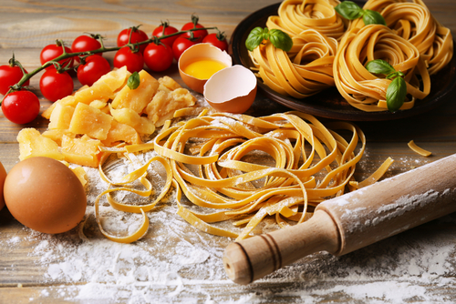
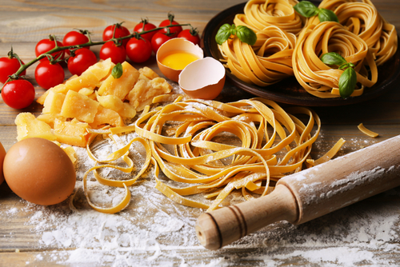

Ubicado a 10 kilómetros de Carmen de Areco y con una población estable de menos de 150 habitantes, Gouin es un pequeño pueblito que refleja la esencia de las poblaciones dispersas en el Interior de la Provincia de Buenos Aires. Fue declarado Pueblo Rural y Turístico de la Provincia.
La magia que lo rodea, la tranquilidad, la hospitalidad de sus habitantes y las tradiciones, lo vuelve un espacio ideal para aquellos que quieran pasar un día de campo sin estar tan lejos de la ciudad. Este pequeño pueblo a 2 horas de Ciudad Autónoma de Buenos Aires, en un paisaje rodeado de la más verde naturaleza, esconde una rica historia gastronómica que no podés perderte!.


 
